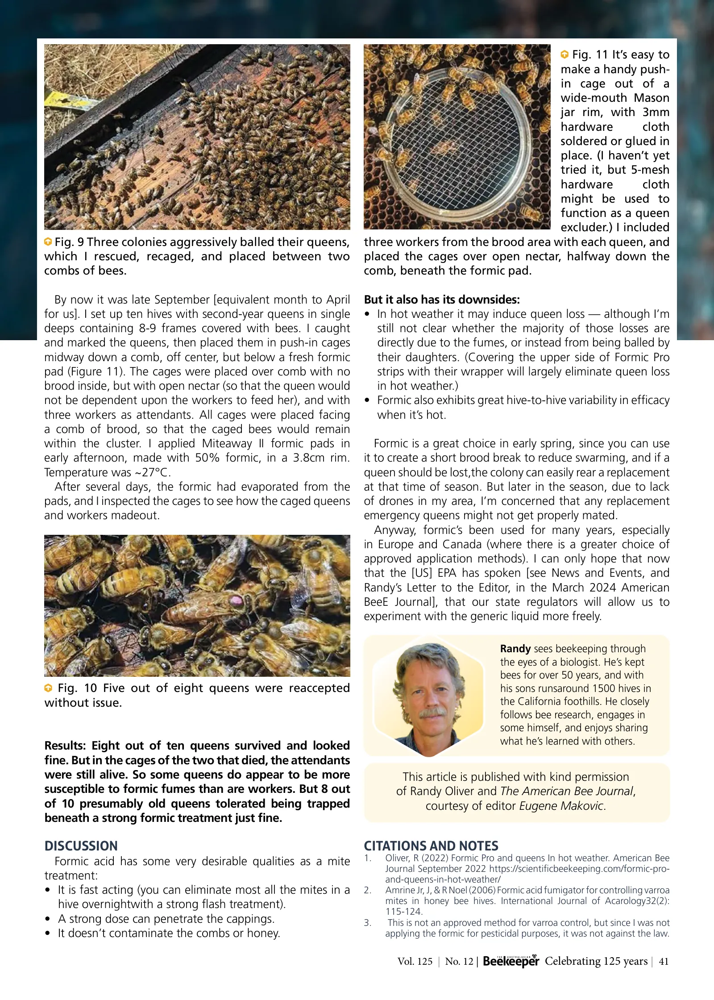

Fig. 11 It’s easy to
make a handy push-
in cage out of a
wide-mouth Mason
jar rim, with 3mm
hardware
cloth
soldered or glued in
place. (I haven’t yet
tried it, but 5-mesh
hardware
cloth
might be used to
function as a queen
excluder.) I included
three workers from the brood area with each queen, and
placed the cages over open nectar, halfway down the
comb, beneath the formic pad.
By now it was late September [equivalent month to April
for us]. I set up ten hives with second-year queens in single
deeps containing 8-9 frames covered with bees. I caught
and marked the queens, then placed them in push-in cages
midway down a comb, off center, but below a fresh formic
pad (Figure 11). The cages were placed over comb with no
brood inside, but with open nectar (so that the queen would
not be dependent upon the workers to feed her), and with
three workers as attendants. All cages were placed facing
a comb of brood, so that the caged bees would remain
within the cluster. I applied Miteaway II formic pads in
early afternoon, made with 50% formic, in a 3.8cm rim.
Temperature was ~27°C.
After several days, the formic had evaporated from the
pads, and I inspected the cages to see how the caged queens
and workers madeout.
This article is published with kind permission
of Randy Oliver and The American Bee Journal,
courtesy of editor Eugene Makovic.
Randy sees beekeeping through
the eyes of a biologist. He’s kept
bees for over 50 years, and with
his sons runsaround 1500 hives in
the California foothills. He closely
follows bee research, engages in
some himself, and enjoys sharing
what he’s learned with others.
1.
Oliver, R (2022) Formic Pro and queens In hot weather. American Bee
Journal September 2022 https://scientificbeekeeping.com/formic-pro-
and-queens-in-hot-weather/
2.
Amrine Jr, J, & R Noel (2006) Formic acid fumigator for controlling varroa
mites in honey bee hives. International Journal of Acarology32(2):
115-124.
3.
This is not an approved method for varroa control, but since I was not
applying the formic for pesticidal purposes, it was not against the law.
Fig. 9 Three colonies aggressively balled their queens,
which I rescued, recaged, and placed between two
combs of bees.
Fig. 10 Five out of eight queens were reaccepted
without issue.
Results: Eight out of ten queens survived and looked
fine. But in the cages of the two that died, the attendants
were still alive. So some queens do appear to be more
susceptible to formic fumes than are workers. But 8 out
of 10 presumably old queens tolerated being trapped
beneath a strong formic treatment just fine.
DISCUSSION
Formic acid has some very desirable qualities as a mite
treatment:
• It is fast acting (you can eliminate most all the mites in a
hive overnightwith a strong flash treatment).
• A strong dose can penetrate the cappings.
• It doesn’t contaminate the combs or honey.
But it also has its downsides:
• In hot weather it may induce queen loss — although I’m
still not clear whether the majority of those losses are
directly due to the fumes, or instead from being balled by
their daughters. (Covering the upper side of Formic Pro
strips with their wrapper will largely eliminate queen loss
in hot weather.)
• Formic also exhibits great hive-to-hive variability in efficacy
when it’s hot.
Formic is a great choice in early spring, since you can use
it to create a short brood break to reduce swarming, and if a
queen should be lost,the colony can easily rear a replacement
at that time of season. But later in the season, due to lack
of drones in my area, I’m concerned that any replacement
emergency queens might not get properly mated.
Anyway, formic’s been used for many years, especially
in Europe and Canada (where there is a greater choice of
approved application methods). I can only hope that now
that the [US] EPA has spoken [see News and Events, and
Randy’s Letter to the Editor, in the March 2024 American
BeeE Journal], that our state regulators will allow us to
experiment with the generic liquid more freely.
CITATIONS AND NOTES
Vol. 125 | No. 12 |
Celebrating 125 years | 41